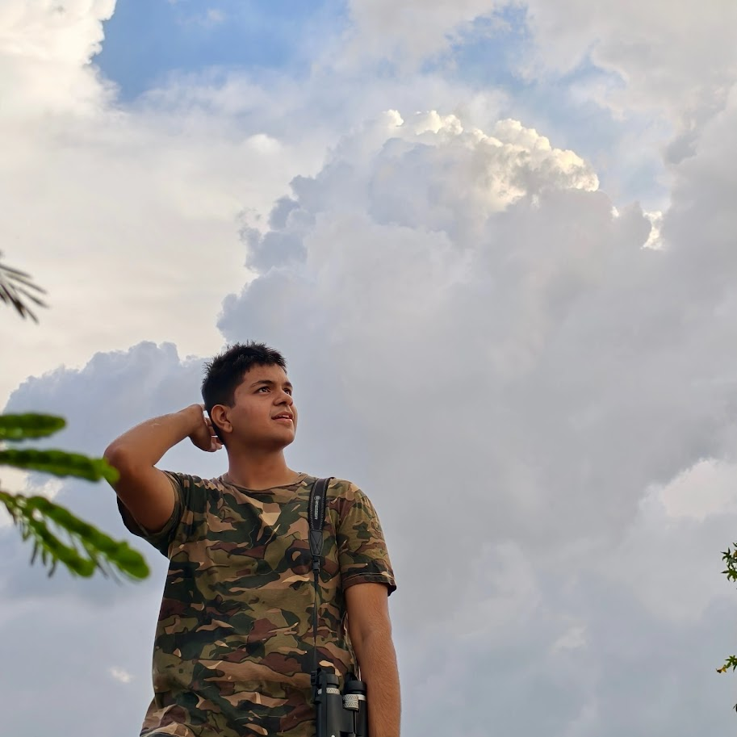

Hey, I'm
Electronics Engineer & Technology Enthusiast
Research Engineer at Pramatra Space, building quantum communication systems for satellites. I also write about ideas, photograph birds, and stare at the sky a lot.

I'm a Research Engineer at Pramatra Space, working on quantum key distribution (QKD) systems for CubeSat payloads in low Earth orbit. I hold a B.E. in Electronics & Telecommunication Engineering from PICT, Pune. My career spans ISRO's Space Applications Centre, IISc Bangalore's Quantum Technologies Lab, and the space-tech industry — building FPGA-based systems, quantum readout hardware, and space-grade electronic payloads at the intersection of quantum physics and engineering. Outside of engineering, I volunteer as a teaching mentor for underprivileged school children, write on philosophy and ideas, pursue bird-watching, photography, and sketching.